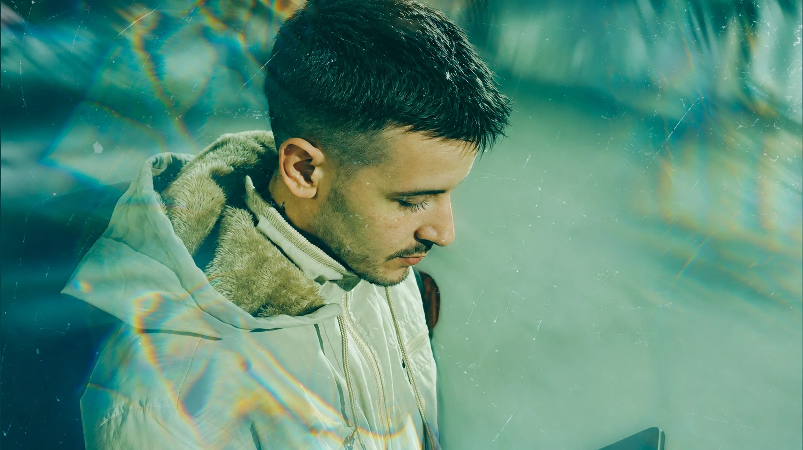

Eu sou o Quil. Minha história com a música começou há alguns anos, entre o rap, o trap e o R&B. Desde o início, sempre tive mais interesse em transformar o que vivia em música do que em seguir um caminho pronto. Ao longo do tempo, lancei trabalhos, construí meu próprio catálogo e vivi fases muito diferentes. Também vieram períodos em que precisei me afastar. A vida aconteceu fora da música: mudanças, perdas, questões pessoais e responsabilidades que acabaram tomando o espaço que antes eu dedicava a criar. Depois de cerca de quatro anos longe dos lançamentos, voltei em 2026. Voltei fazendo do meu jeito: compondo, produzindo, gravando, mixando e cuidando de cada detalhe. Saíram “Consequência de Estar Acordado”, “TAG”, “Se Move” e “Quase Indo”. Foi uma forma de reencontrar esse lugar e mostrar que o projeto ainda estava aqui. Sou artista do selo independente Brutt Gang, que leva esse nome em homenagem ao meu irmão, Matheus “brutt”, jogador de Counter-Strike. Sua memória faz parte da minha história e do que construo com a música. Hoje, a música divide espaço com outras responsabilidades. Nem sempre consigo manter o ritmo que gostaria, e às vezes preciso parar para cuidar da vida que acontece ao redor dela. Mas não considero esses intervalos um ponto final. O Quil carrega todas essas fases, inclusive as que ainda estão por vir.

01 / História
This Is o Quil
Artista do selo independente

ENTERTAINMENT02 / Música
Últimos lançamentos
Quase IndoOuvir
Se MoveOuvir
TAGOuvir
Consequência de Estar AcordadoOuvir
Arquivo / 2014 — 2023
linha do tempo
Cada lançamento, um capítulo.
Os caminhos que trouxeram o Quil até aqui.
- Capítulo 01
Sinergia
- Capítulo 02
Por Via das Dúvidas
- Capítulo 03
Lost Tracks, Vol. 0
- Capítulo 04
Lost Tracks
- Capítulo 05
Platônico
- Capítulo 06
Noites Online
- Capítulo 07
Não Importa
- Capítulo 08
Sombras do Subconsciente
03 / Arquivo
Na imprensa.
Matérias e referências sobre os lançamentos e a trajetória do artista.
Popload Beats
Popload Beats apresenta: Fillipe Queiroz
Entrevista sobre Sinergia, produção coletiva e os primeiros passos de Fillipe Queiroz com a NAS.
VICE
Encontros e Desencontros: Um Mapa dos Coletivos Brasileiros de Música Eletrônica Independente
A reportagem apresenta o selo NAS, cita Filipe Queiroz e destaca Sinergia como exemplo do encontro entre rap e música eletrônica.
VICE / Noisey
‘Por Via das Dúvidas’ É o Novo Disco do Rapper Fillipe Queiroz
A matéria apresenta o primeiro álbum e relembra Sinergia, EP de estreia lançado em 2014.
Globo Esporte
CS:GO: familiares, companheiros e grandes nomes do cenário homenageiam brutt nas redes sociais
A matéria registra as homenagens a brutt e menciona o rapper o Quil entre os irmãos que prestaram homenagem.